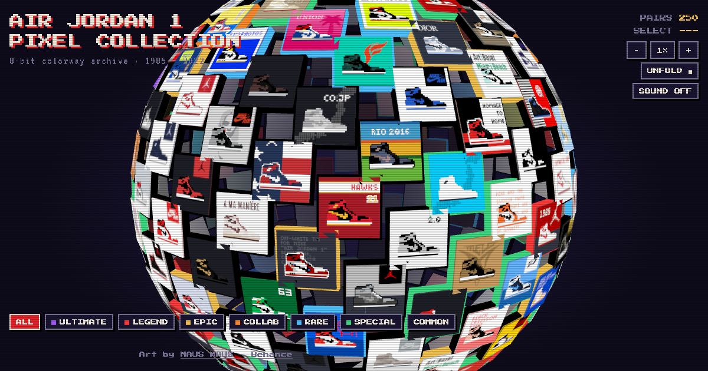

MAKING-OF · AIR JORDAN 1 PIXEL COLLECTION
Behance 그리드가 3D 지구본이 되기까지
MAUS MAUS의 8비트 에어조던 1 컬렉션 250점을 돌려 보고, 펼쳐 보고, 한 켤레씩 열어 보는 웹사이트로 만들었어요. 아이디어부터 GitHub Pages 배포까지 Claude와 하루 동안 나눈 대화를 순서대로 정리했어요.

숫자로 보면
- PAIRS
- 250
- TIERS
- 7
- THUMBNAIL
- 152px
- TEXTURE SHEETS
- 2 × 2048
- ULTIMATE 1
- LEGEND 16
- EPIC 9
- COLLAB 7
- RARE 15
- SPECIAL 30
- COMMON 172
대화 순서대로
- 01
픽셀 조던이 스피어 형태로, 마우스로 스핀, 클릭하면 상세 카드
방향 잡기: "8-bit Arcade Globe"
Behance 원작을 살펴보니 컬러웨이마다 연도와 단색 배경이 있는 타일 구성이었어요. 마지막의 거대한 그리드를 구로 감싸면 메인 화면이 된다고 봤고, 어두운 CRT 배경, 픽셀 폰트, RPG 아이템 창 같은 카드를 제안했어요.
- 02
응 예시로 해봐
첫 시제품
임시로 그린 픽셀 신발 30종으로 시작했어요. 드래그 회전과 관성, 클릭하면 구가 돌아와 열리는 카드, 타자기처럼 나오는 설명, 필터, 8비트 효과음까지 넣었어요. 작가 본인이 이미지가 250장이라고 알려줘서 타일 수를 그 규모에 맞췄어요.
- 03
줌 인/아웃 기능도 필요한듯 · 카드도 3D로
줌과 3D 카드
휠, 트랙패드, 두 손가락 핀치로 확대할 수 있게 했어요. 카드는 옆에서 회전하며 날아 들어오고, 마우스를 따라 기울며, FLIP으로 뒤집혀요. 이 과정에서 타일이 카드 위로 올라오는 버그와 뒷면에 앞면이 비치는 버그를 고쳤어요.
- 04
조그만 신발 카드가 2D라는 거지
타일 자체를 입체로
평면 사각형이던 타일을 Three.js(WebGL)로 다시 만들었어요. 타일은 두께가 있는 블록이 됐고 구 표면을 따라 방향이 꺾여요. 조명으로 옆면에 음영이 생기고, 커서를 올리면 앞으로 떠올라요.
- 05
Figma 링크 · 스피어에 이징 효과
Figma 보드 구조 반영과 이징
작가의 Figma 보드를 읽어 보니 컬렉션이 7개 등급으로 나뉘어 있었어요. 연도 필터를 등급 필터로 바꾸고, 등급마다 타일 테두리 색을 다르게 했어요. 회전은 손가락을 살짝 늦게 따라오게 하고, 자동 회전은 서서히 빨라지게, 타일로 돌아갈 때는 가속·감속 곡선을 쓰도록 바꿨어요.
- 06
썸네일 이미지를 피그마에서 가져와줘… 나이키 로고도 안 보이고
원본 썸네일 250장
보드에서 152×152 썸네일 프레임과 캡션(이름, 스타일 코드, 연도, 발매가)을 모두 읽었어요. 원본 해상도로 잘라 2048px 텍스처 시트 두 장으로 묶었어요. 확대해도 픽셀이 뭉개지지 않게 처리해서 나이키 로고, 점프맨, DIOR, TEDx까지 또렷하게 보여요.
- 07
펼쳐보기 기능도 추가해줘
UNFOLD: 구에서 보드로
버튼을 누르면 구가 정면으로 돌아온 뒤 타일이 하나씩 시간차를 두고 날아가 Figma 보드처럼 등급별 줄로 펼쳐져요. 펼친 상태에서는 드래그로 이동하고 휠로 확대해요. 다시 누르면 같은 동작으로 구로 접혀요.
- 08
그냥 움직임 없이 · 간격 더 촘촘히 · 문구 제거
다듬기
카드 속 신발이 위아래로 튀던 애니메이션을 없앴어요. 구와 보드 모두 타일 간격을 좁혔고, 카드에서 제작용 메모 두 줄을 지웠어요.
- 09
깃헙에 올리자 · 미리보기 이미지도 등록해줘
배포
ultra0034/jordan저장소에 올리고 GitHub Pages로 공개했어요. 링크를 공유하면 이 페이지 맨 위의 이미지가 미리보기로 뜨도록 Open Graph 이미지와 태그도 넣었어요.
만들면서 알게 된 것
- 블록 250개, 그리기 호출은 적게블록 몸통과 등급 테두리는 각각 하나의 InstancedMesh로 그려요. 썸네일 면만 타일마다 따로 두었고, 텍스처는 시트 두 장을 공유해요.
- z-fighting펼친 보드는 카메라가 멀어서 썸네일 면과 블록 앞면의 깊이가 겹쳐 썸네일이 사라졌어요. 면을 조금 띄우고, polygon offset을 주고, 카메라 near 값을 올려서 해결했어요.
- 뒤집히는 카드입체감을 위해 카드 안 요소들을 서로 다른 깊이에 두었더니 backface-visibility가 듣지 않았어요. 회전이 반쯤 진행됐을 때 앞면과 뒷면을 바꿔 보여주는 방식으로 풀었어요.
- 펼쳐질 때의 시간차타일마다 보드 순서에 비례한 지연(최대 40%)을 주고, 각자 ease-in-out으로 위치와 회전을 보간해요. 그래서 위쪽 등급부터 차례로 날아가요.